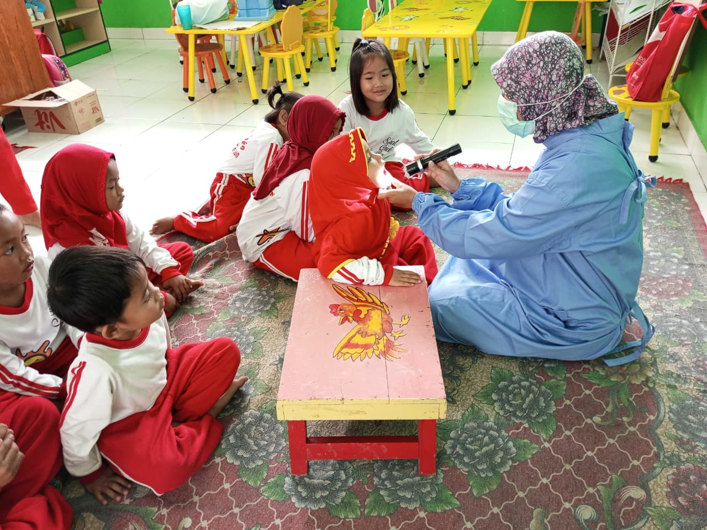
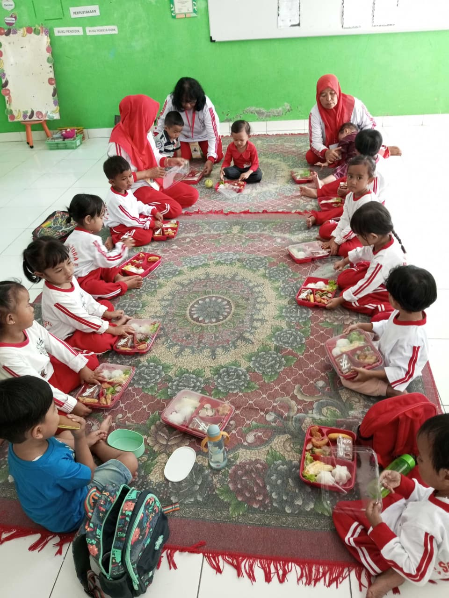

Berbagai program untuk mendukung perkembangan anak usia dini

Kegiatan Imtaq dan Sekolah Minggu bertujuan untuk menanamkan nilai-nilai keagamaan sejak dini melalui pembiasaan doa, ibadah sederhana, serta pembelajaran moral dan spiritual yang sesuai dengan usia anak.

Program parenting dilaksanakan untuk meningkatkan kerja sama antara sekolah dan orangtua/wali dalam mendukung perkembangan anak, baik dari aspek pendidikan, karakter, maupun kebiasaan sehari-hari.

Kegiatan ini mengenalkan bahasa, permainan tradisional, dan tembang Jawa untuk menumbuhkan kecintaan terhadap budaya daerah serta melatih kemampuan bahasa dan sosial anak.

Cooking class memberikan pengalaman langsung kepada anak dalam mengenal bahan makanan, proses memasak sederhana, serta melatih kemandirian dan kerja sama.

Kegiatan ini bertujuan untuk memantau tumbuh kembang anak secara berkala melalui pemeriksaan kesehatan, pengukuran fisik, serta deteksi dini perkembangan anak usia dini.

Outing class adalah kegiatan belajar di luar kelas yang memberikan pengalaman langsung kepada anak untuk mengenal lingkungan sekitar secara lebih nyata dan menyenangkan.

Program gizi bertujuan untuk mendukung kebutuhan nutrisi anak melalui pemberian makanan tambahan yang sehat dan bergizi guna menunjang pertumbuhan dan perkembangan optimal.

Kegiatan menari melatih motorik, ekspresi diri, serta rasa percaya diri anak melalui gerakan yang diiringi musik dan irama.

Melukis dan menggambar membantu anak mengembangkan kreativitas, imajinasi, serta kemampuan motorik halus dalam menuangkan ide dan perasaan.

Program pembudayaan bertujuan membentuk karakter anak melalui pembiasaan hidup bersih, disiplin, mandiri, serta sikap tertib dan sabar dalam kehidupan sehari-hari.